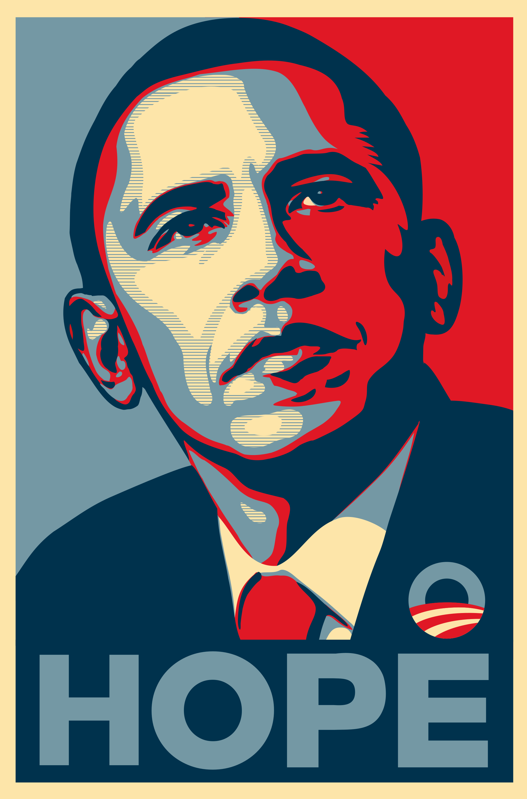

Doing Digital Visual Studies:
An Introduction
By Laurie E. Gries and Aaron Beveridge
In the last 20 years, a number of scholarly books about visual research, such as Sarah Pink’s Doing Visual Ethnography (2013 [2001]) and Marcus Banks’ Visual Methods in Social Research (2001), have emerged on the academic scene, marking visual methodology as a new field of study in and of itself. Sarah Pink, perhaps, describes this field of study best when she writes that the study of visual methodology entails “understanding and engaging not only with the newest and latest theoretical developments in our fields, but also with the ways that these are co-implicated with technological developments and media practices” (Advances 3). As evident in Theo Van Leeuwen and Carey Jewitt’s The Handbook of Visual Analysis (2001), Gunther Kress and Theo van Leeuwen’s Reading Images: The Grammar of Visual Design (2006), and Gillian Rose’s Visual Methodologies (2010 [2001]), content analysis, discourse analysis, psychoanalysis, audience analysis, and semiotic analysis have long been taken up for visual research. Taking a critical stance, scholars draw on these various approaches to study the design, form, production, and reception of a wide range of visual artifacts—from performance art installations to news photographs to advertisements, political films, and outdoor murals and graffiti. Extending the seminal work of Roland Barthes on visual rhetoric, rhetorical theory, of course, has also made its mark on visual research. Leading scholars such as Cara Finnegan, Lester Olson, Robert Hariman and John Lucaites have especially helped to prioritize circulation as a site of study in order to disclose how iconic photographs, political emblems, and other visual artifacts come to constitute our identities, communities, values, and beliefs.1
Yet despite the lingering values of such approaches, advancements with digital technologies are transforming even our most traditional visual research approaches. Among other developments, the production of visual search engines, the ubiquity of data-driven content, the proliferation of algorithms, advancements in data visualization, and innovations with digital production and recording tools are pushing the invention of new research methodologies and methods such as digital ethnography (Pink 2016), eye tracking (Müller, Kappas, and Olk 2012), and iconographic tracking (Gries 2017). When considered alongside the emergence of participatory culture and ubiquitous computing as well as responsive theories about images, materiality, space, and technology, the practice of visual research simply does not look the same as it did even 15 years ago. This collection attends to such methodological shifts in both research and practice with the aims of igniting new possibilities for doing digital visual research.
To be clear, in this collection, we make firm distinctions between methods and methodologies. In the simplest sense, method refers to a constellation of research strategies that one uses to collect, organize, and analyze data. In this collection, scholars rely on iconographic tracking, data science methods, and archival research methods, among other constellations of strategies, to deal with their specific objects of study. While some methods such as iconographic tracking were specifically designed for visual study, others such as infrastructural inversion have been adapted for visual study. Methodology, on the other hand, as Clay Spinuzzi so clearly explains, “is the theory, philosophy, heuristics, aims, and values that underlie, motivate, and guide” one’s methods (7). Readers will find that like many of the methods, methodologies commonly undergirding studies of other media and artifacts are adapted here for digital visual research. Media archeology, for instance, is adapted to study infrastructures of software designed to produce visual webicons while critical making is adapted to study 3D prints of 2D visual images. Yet some authors such as Kyle Bohunicky and Aaron Beveridge and Nicholas Van Horn take less common methodological paths, turning to research-creation, glitch studies, and what Beveridge and Van Horn call macroscopic methodologies for their unique enactments of digital visual studies. As identified above, Pink pushes us to think of visual methodology as an area of study in of itself that concerns how visual research is conducted in relation to emerging and evolving theories, technologies, and practices. Following this line of thought, while we draw on various methodologies and methods to do digital visual studies, we see this project, as a whole, contributing to visual methodology by exploring new visual research potentials afforded by engagement with emergent technologies and novel media practices.
Content and Organization
Typically, as evident in Rose’s Visual Methodologies and Theo Van Leeuwen and Carey Jewitt’s The Handbook of Visual Analysis, visual methodology books survey different approaches through discussions of various visual artifacts. In this collection, readers will find that each chapter takes up a different methodology in relation to one single image. We believe that using one visual artifact throughout the entire book better highlights the distinctions between different research approaches and elucidates what each approach can uniquely bring to an object of study. We also believe that using one visual artifact helps to highlight the unique affordances that engaging with the digital can bear on visual studies.
Figure 1. Sheppard Fairey's Hope Poster. Attribution: Courtesy of Shepard Fairey-ObeyGiant.com
The chosen image for our methodological project is Shepard Fairey’s iconic Obama Hope image, which became widely recognizable and impactful during the 2008 presidential election season (see Figure 1). We have chosen this image for three reasons. First, as we discuss throughout this chapter, this book project is grounded in digital experimentation; as such, we needed an image that is methodologically flexible and capable of digital play. Due to the transformative, educational, and critical nature of this digital book project, the Obama Hope image is accessible under Fair Use. It is also simple in design, making remix, 3-D printing, and glitching--the creative practices explored in the collection—both possible and manageable. Second, we felt that in order to assess the value of each enacted methodology and method, we needed deep knowledge about our chosen object of study. Gries has been closely following and writing extensively about the Obama Hope image’s ongoing rhetorical life for 10 years (2013; 2015; 2017); therefore, as lead editor, Gries had a clear grasp of this image’s circulation, transformation, and rhetorical consequentiality and could thus assess each chapter’s claims about and representations of Obama Hope accordingly.
Third, we needed to focus on an image that has sustained cultural relevance and is capable of educating us about contemporary new media images and practices. Due to its mass appeal and extensive involvement in helping elect the first African American president in U.S. history, the Obama Hope image has been deemed by New Yorker art critic Peter Schjeldahl to be the most efficacious political illustration since “Uncle Sam Wants You.” In Still Life with Rhetoric (2015), Gries’ research with iconographic tracking was able to disclose how this single image was able to go viral and become an integral actor in the 2008 presidential election. Gries’ research there and subsequently (2017) has also been able to recover many other collective activities in which Obama Hope participated between 2008 and 2015, including, but not limited to, its participation in the Arab Spring and Occupy movements, in Greenpeace’s transnational environmental movement, and numerous political elections across the world, including the 2012 U.S. presidential election. Such research has enabled Gries to generate many useful insights about, among other things, how viral circulation unfolds with time and space in a digitally networked global culture. Yet because Obama Hope is still circulating in the Trump presidential era and impacting culture in provocative ways and because Still Life of Rhetoric’s main purpose is to explicate what iconographic tracking and a new materialist approach to visual rhetoric might entail, Gries’ work with Obama Hope in Still Life with Rhetoric is limited. Obama Hope still has much to teach us about visual culture, media studies, and popular culture, especially if studied from the diverse methodological approaches introduced in this collection and other digital research methods.
In taking up Obama Hope as a single object of study, we explore how “the digital” is inflecting upon and diversifying visual studies in inventive and productive ways. We embrace the idea that visual studies is necessarily interdisciplinary--that the exploration into the interrelations between visual phenomena, visuality, vision, and culture benefits from various methodological approaches and diverse methods. We also recognize that whether taken up in anthropology, media studies, cultural studies or postcolonial studies, each discipline and field of study has something unique to offer as we explore shared questions related to the visual—what is made visible and invisible, how perspectives and communities are shaped by visual culture and vice versa, how knowing, seeing, and power are interrelated, etc. Yet we especially appreciate the work that scholars within the disciplines of Rhetoric and Composition/Writing Studies (RCWS) and Communication have brought to visual studies—from Finnegan’s and Lester Olson’s studies of visual rhetorical history to Hariman’s and Lucaites’ work with photography and civic spectatorship to Sid Dobrin and Sean Morey’s explorations of ecosee to Kristie S. Fleckenstein, Sue Hum, and Linda T. Calendrillo’s study of shared ways of seeing and most recently Sean Morey and John Tinnell’s work with augmented reality. As scholars housed in these same disciplines, we aim to contribute to this ever-growing body of work by exploring how experiments with the digital can enhance our visual studies in ways that we have yet or just begun to explore.
Highlighting the Digital
When it comes to “the digital,” we are thinking of it here in general terms as the technologies, systems, and networks that allow for new forms of storing, organizing, analyzing, and presenting information. More specifically, in relation to visual studies, we think of the digital as a broader “organizing principle” of scholarly practice that allows for information to be “articulated and rearticulated, reshaped or recreated” in novel and generative ways (Eyman 20). To distinguish digital visual studies from visual studies is to acknowledge that research unfolds differently in today’s information environment with emergent digital technologies at our disposal—in design, in implementation, in outcomes, and in presentation. Consider, for example, the following narrative told by Melissa Terras, a Digital Humanities scholar from the University College London, who paints a vivid picture of visual research pre and post digital.
I studied Art History in my undergraduate days, and was thinking of what a career in the humanities meant to students, then. It started with the slide test, where we learnt and memorized hundreds of paintings, and were expected to be able to mobilise knowledge about them expertly. (Note – In the lecture I undertake a slide test here of Degas’ Miss La La at the Cirque Fernando, 1879, National Gallery, London). We would study 35mm slides, cramped round a slide cabinet perhaps 5 students deep, for hours, and back this up through print publications and gallery visits. If you caught the bug, you might do your undergraduate dissertation on, say, Degas and his circus paintings. You may then do a MA dissertation on the Impressionists and their circus paintings. If you were good enough, and fortunate to gain funding, you might do your PhD dissertation on the use of perspective in Degas’ circus paintings, and what this “means” for modern art. Eventually, after stiff competition, you may get a post teaching modern (used in the broadest sense) art, and your research would become highly specialised in perspective in impressionist paintings of performance. After years of hard graft you’d own this area, and write in this area, and have found and read every book and article on this area, and publish the elusive monograph in this area. You may have even travelled widely to see every painting in this area in the flesh, not to mention visiting many archives and libraries. It would take years to even piece together all the information you needed to become an expert in the field.
Let’s contrast that to today’s information environment. You are not sure of the exact painting you are interested in, and rather than remember it, a quick google of “degas circus painting” leads you to the Wikipedia page of Miss La La. You can find a link to it at the National Gallery, London, where you can zoom in in so much more detail that you could ever see in a 35mm slide, or even up close when visiting the gallery. You can see where this fits in to the pantheon of Degas’ – and the Impressionists’ – oeuvre by looking up the complete works of all Impressionist paintings, online. The complete works of Edgar Degas shows you every single known study for Miss La La, and you can see high definition images of a pastel study for the painting on the Tate website. You can look up historical newspaper archives to see if there was anything written about the painting or artist in the past, find relevant journal articles that refer to the painting from the comfort of your own laptop, and see if it had been mentioned particularly in any book published since the painting was painted. You could even wander up to the painting virtually using the Google Art Project (well, you will be able to once the NG expand their coverage of Google Art beyond the couple of galleries that have been digitised via street view technology). You can see other’s views and visits of the artwork by a simple Flickr search (which is something art historians love, in particular, for looking at alternative views of sculptures held in museums, beyond the official viewpoint in the print catalogues). If you are in the Gallery, and want more information about a painting, you can simply take a picture on your phone, and search Google with that image, or use Google goggles to tell you more about it. (I am aware that I am mentioning Google frequently: a) I am “not-working” from home and therefore unable to easily access other institutional resources, and b) they do provide an easy suite of tools to use in the first instance, even if there are shortcomings and limitations). You can do a reverse image search using Tin Eye to see who else is talking about that image/ artwork. If you have the access, and resources, you could use advanced imaging techniques to study both the creation and the current condition of the artwork, for conservation purposes and beyond. You could use computational methods to analyse the angles and perspectives of the human figure in Degas’ artworks. You could virtually recreate the Cirque Fernando in 3D to investigate the artist’s perspective of Miss La La. If you didn’t know how to do any of this, you could ask twitter for some pointers, and within minutes someone in the DH community would have responded. Post a question on DH answers, and within 24 hours you would have the best advice on how to study perspective in modern art, using computational methods.
Now obviously, Terras here is focused on how DH research is transforming art history, a field of study with a much narrower scope of inquiry than visual studies (Dikovitskaya 147). However, the contrast articulated by Terras does a remarkable job highlighting just how vast and varied the affordances of the digital are for every stage of the visual research process. As scholars intrigued by such affordances, we aim to explore how digital technologies--social media platforms, software programs, data visualizations, mobile devices, digital archives, etc.--make possible innovative ways of doing visual studies from an interdisciplinary methodological perspective. For the purposes of this collection, we call this work digital visual studies, which brings different methodologies and methods to bear on a single visual object of study yet shares a commitment to engage in experimental digital visual research.
1. For a useful overview of visual rhetoric, as a methodology, see Olson, Finnegan, and Hope 2008, Olson 2007, and Gries 2019.↩